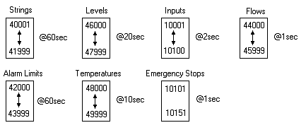

The optimization of scanning typically
involves grouping data correctly within front-end devices, so as to prevent
fragmentation of the data that usually creates a bottleneck for communication
performance.
typically
involves grouping data correctly within front-end devices, so as to prevent
fragmentation of the data that usually creates a bottleneck for communication
performance.
Usually I/Os acquired from the plant are not needed by the SCADA, but are intermingled with the SCADA I/O. Therefore, it is recommended to allocate separate memory space in the controller for SCADA tags and the internal I/O.
Although determining how much memory to reserve is never easy, it is recommended to plan correctly in this area. Certain front-end devices, such as Siemens controllers, make this process easier by using addressable data blocks or files that can grow in size.
By scanning tags, whose slots belong to the same data type, which has contiguous addresses in the front-end device, will ensure that this device will require the least number of transactions to communicate its tags. For details, see Contiguous Scanning.
Note: The reason for this is that a separate Scan agent is generally created by this device's Device agent, for a block of manageable contiguous addresses, the size of which is dependent upon the protocol being used to transfer this data to and from Adroit.
When grouping data, ensure that the various data types are separated, such as Analogs and Digitals, examples of such groups are: Digital Inputs, Analog Inputs, Digital Outputs, Analog SPs etc.
It is also recommended to further differentiate data with respect to
their required scan rate.
Typically Analog values for I/O, such as temperatures can be grouped together
as these values generally change very slowly.
Although, Digital data must always be scanned quite fast, it is possible
to differentiate between feedback and event digitals that must be polled
very fast and digitals that indicate situations that need not be acted
on right away, such as a high level indicator that takes 15 minutes to
overflow.
Note: When scanning tags, remember that it is the data type of the SLOT that is being scanned that determines which group it should be scanned to and not its AGENT name. For details of optimizing the scanning for an Analog agent, see Analog Scanning Optimization Example.
The following examples illustrates how various types of data types could be grouped:
Note: Scan times of less than 1000 ms should only be used if the driver can poll fast enough. Using faster scan times may adversely affect communications error recovery and the sending of controls to the front-end device.

A further tip to optimise scanning in Adroit:
Save the WGP and then restart the Agent Server to potentially reduce the number of required Scan agents.
Reason: It is only when saving the Adroit agent database (.WGP) file that the Adroit scanning sub-system sorts the scan list into the optimal order, but this .WGP file is only read again when the Agent Server is restarted.
Example: After successively importing and deleting scanned items a system required 69 Scan agents. By simply saving the WGP file and restarting the Agent Server, without doing anything else, Adroit only required 30 Scan agents!